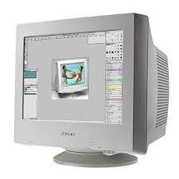

Flat Screen MonitorIt has a flat surface and is lightweight compared to older monitors. |
Lcd/Led Monitorthat uses liquid crystals and a backlight to produce images. It's energy-efficient and commonly used in most modern devices. |
Monochrome Monitorin a single color on a background, typically black-and-white or green-and-black, used mostly in early computers. |

CRT Monitoruses electron beams and a phosphorescent screen to display images. It was commonly used before flat-screen technology became standard. |
|---|